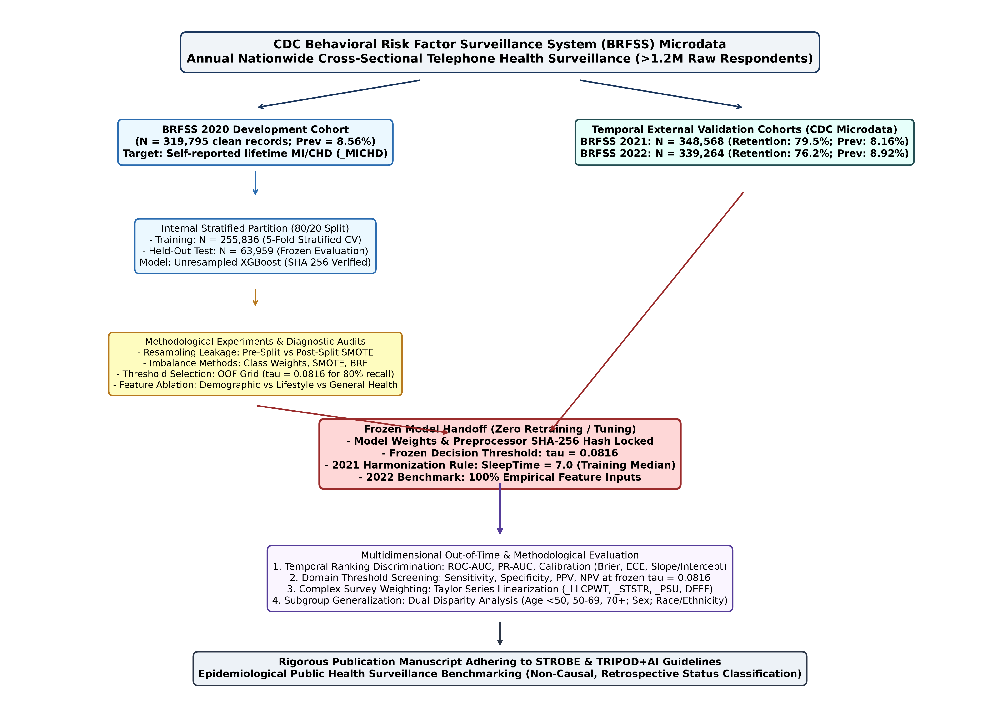
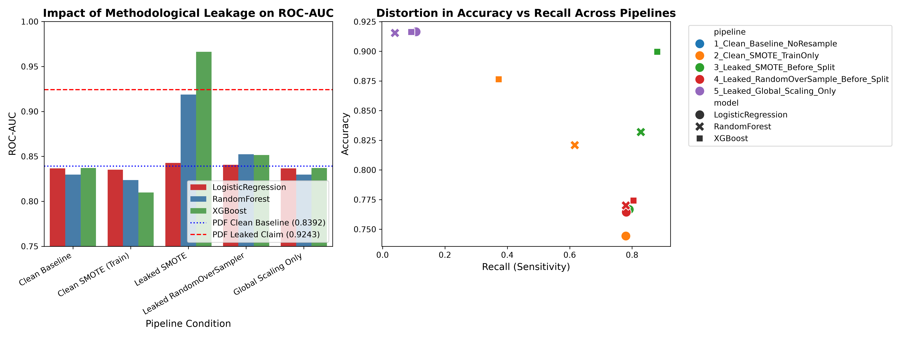
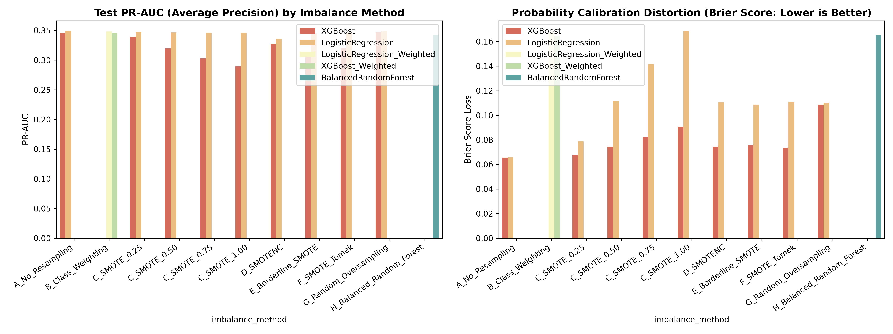
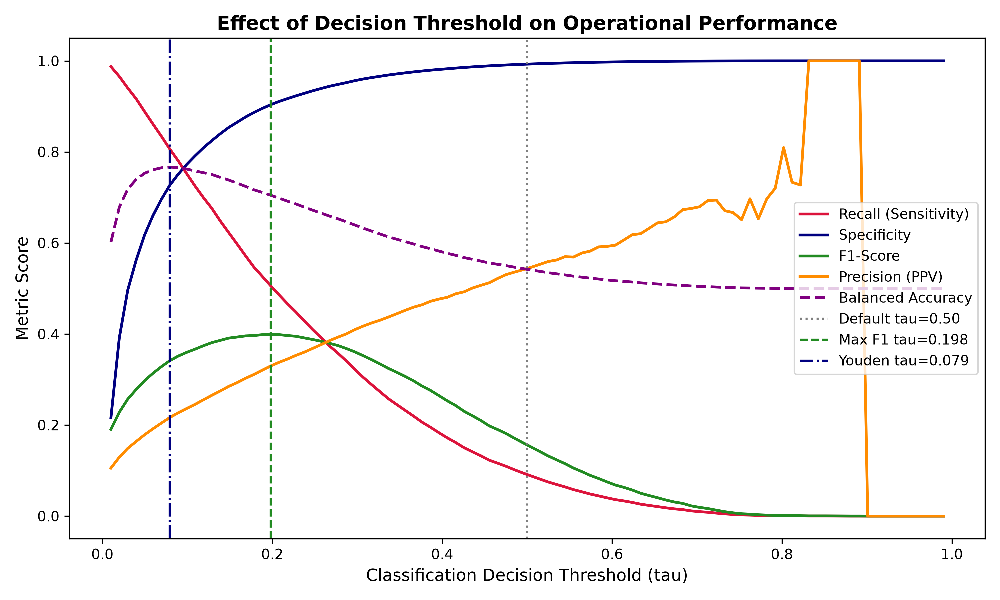
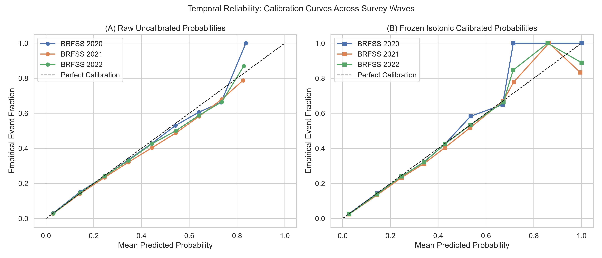
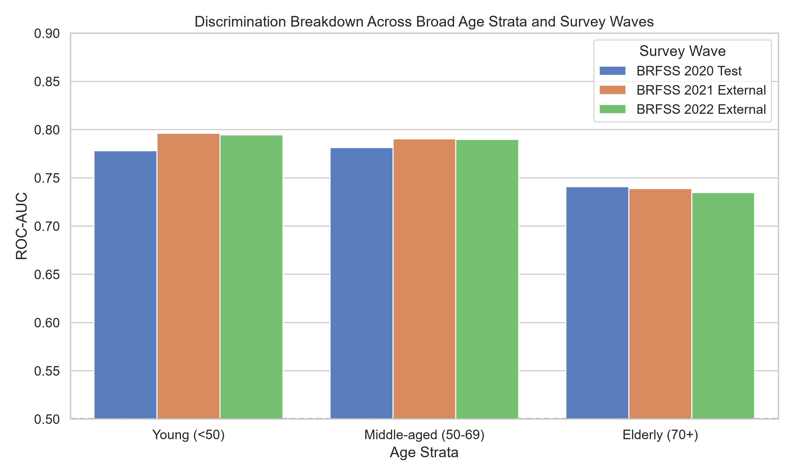
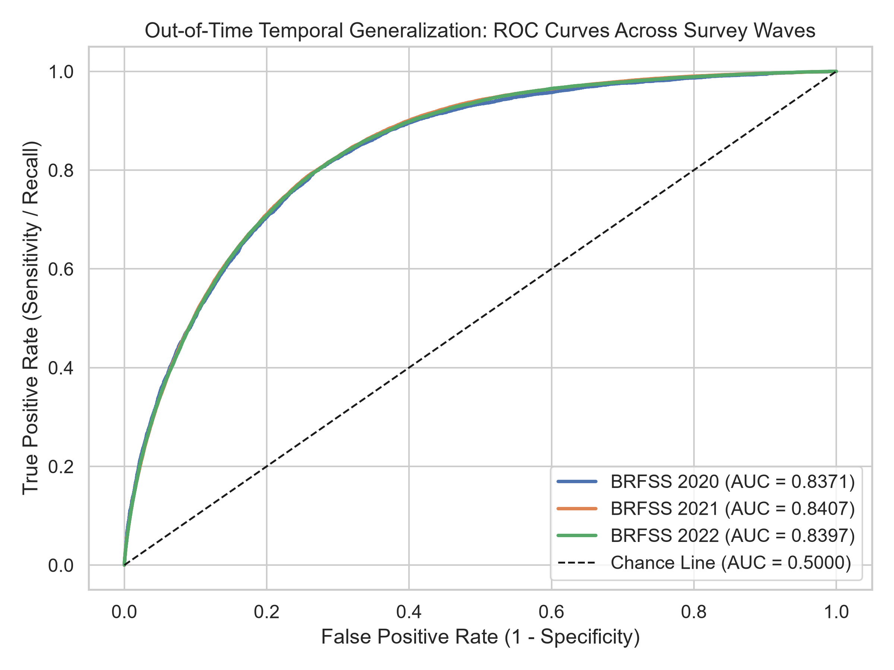
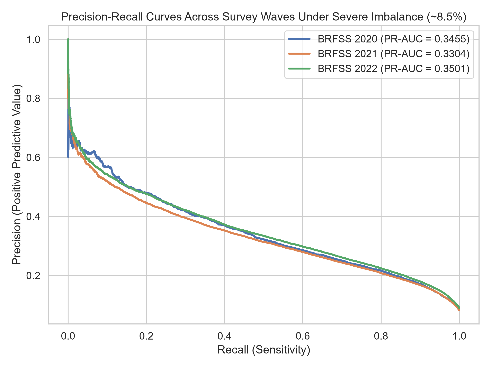
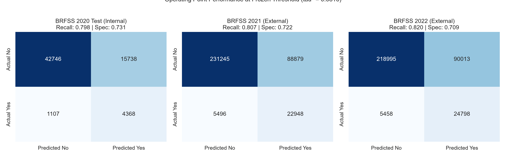

Reporting Standards: STROBE (Observational Epidemiology) & TRIPOD+AI (Artificial Intelligence Prediction Models)
---
Background: Machine learning models trained on large population health surveillance surveys are increasingly proposed for automated cardiovascular risk stratification. However, published benchmarks frequently rely on naive random train-test splits, apply synthetic oversampling (SMOTE) across unpartitioned data, evaluate exclusively at arbitrary default decision thresholds ($\tau = 0.50$), and omit independent out-of-time temporal validation.
Objective: To evaluate how data leakage from pre-split resampling, class-imbalance strategies, probability calibration, and domain-informed threshold selection affect the true discriminative performance, reliability, and multi-year temporal generalization of machine learning models classifying self-reported cardiovascular disease status in population health surveys.
Methods: We conducted an end-to-end methodological audit and multi-wave temporal validation using the CDC Behavioral Risk Factor Surveillance System (BRFSS), encompassing $>1.2$ million total survey responses across three consecutive annual cycles (2020, 2021, and 2022). The primary target was self-reported lifetime physician-diagnosed myocardial infarction or coronary heart disease (`_MICHD`). Using an 80/20 partitioned development cohort in BRFSS 2020 ($N = 319,795$; positive prevalence $8.56\%$), we compared clean training-only resampling against a deliberately invalid pre-split oversampling control. A frozen, unresampled gradient boosted decision tree (XGBoost; SHA-256 hash locked) was calibrated, optimized for an $80\%$ screening sensitivity operating point ($\tau^* = 0.0816$), and evaluated without retraining or recalibration across independent out-of-time surveillance waves in 2021 ($N = 348,568$) and 2022 ($N = 339,264$). Evaluation accounted for complex survey design features (`_LLCPWT`, `_STSTR`, `_PSU`) using Taylor series linearization.
Results: Pre-split SMOTE produced an artifactual $+0.1566$ ROC-AUC inflation (0.9664 vs. 0.8098 clean, $p < 0.0001$), driven by synthetic near-duplicate evaluation contamination. Clean training-only SMOTE degraded probability calibration (Brier score increased $+38.1\%$ from 0.0657 to 0.0907, $p < 0.0001$) without improving ranking discrimination over unresampled trees (ROC-AUC 0.8371). The default threshold ($\tau = 0.50$) collapsed under $8.56\%$ prevalence, identifying only $9.22\%$ of true positive cases. In contrast, threshold selection on training cross-validation ($\tau^* = 0.0816$) stably achieved the target screening sensitivity across three calendar years: $79.78\%$ in 2020 test, $80.68\%$ in 2021, and $81.96\%$ in 2022, with unweighted ROC-AUC preserved at $0.8371$ (2020), $0.8407$ (2021), and $0.8397$ (2022; independent difference test $p \ge 0.407$). Applying post-stratification survey weights yielded lower population-weighted sensitivity ($75.19\%$ in 2021, $78.72\%$ in 2022) and higher specificity ($80.17\%$ and $78.79\%$) because CDC raking down-weights over-represented elderly respondents. Age subgroup evaluation revealed a dual phenomenon: ranking discrimination degraded in elderly adults (ROC-AUC $\sim 0.735$ in ages 70+ vs. $\sim 0.795$ in ages $<50$, $p < 0.0001$), while fixed-threshold sensitivity varied 3.0-fold ($31.5\%$ to $92.6\%$) across an 11-fold prevalence gradient.
Conclusions: Unresampled gradient boosted trees with domain-informed thresholding generalize across multi-year national surveillance waves without synthetic oversampling. Resampling before partitioning generates catastrophic optimistic bias, while training-only resampling distorts probability calibration. Public health AI models must report calibrated probabilities, evaluate domain-specific decision thresholds, distinguish respondent metrics from survey-weighted population estimands, and recognize the retrospective cross-sectional nature of survey-based disease classification.
---
Cardiovascular diseases (CVD), encompassing coronary heart disease (CHD) and acute myocardial infarction (MI), remain the leading cause of morbidity, mortality, and healthcare expenditure in the United States and globally [Tsao2023_AHA]. In public health epidemiology, continuous population-level surveillance is vital for tracking disease prevalence, identifying vulnerable demographic subgroups, monitoring health behaviors, and guiding resource allocation. The Behavioral Risk Factor Surveillance System (BRFSS), conducted continuously by the Centers for Disease Control and Prevention (CDC) across all 50 U.S. states, the District of Columbia, and U.S. territories, represents the premier health surveillance system in the world, collecting over 400,000 annual telephone interviews [CDC_BRFSS_Overview].
With the rapid expansion of machine learning (ML) and artificial intelligence (AI) in medicine, researchers have increasingly applied supervised classification algorithms to the BRFSS to predict cardiovascular disease [Jahed2023_ICSCA; @Aiosa2023_IEEEAccess]. However, the translation of modern machine learning to population survey microdata is fraught with deep methodological vulnerabilities that undermine the scientific validity and clinical interpretability of published findings.
Four pervasive methodological pitfalls characterize the current literature on population health survey machine learning:
To establish scientific integrity, the classification target of this study must be defined with absolute precision. The target variable represents self-reported lifetime physician-diagnosed myocardial infarction or coronary heart disease/angina, standardized via the CDC calculated variable _MICHD.
This is strictly a retrospective cross-sectional survey-status classification task. Survey respondents are community-dwelling individuals who have survived their cardiovascular events. Consequently, this study does not evaluate:
This investigation addresses the following primary research question:
> How do evaluation leakage, class-imbalance handling methods, and operating-threshold selection affect the reliability, probability calibration, and multi-year temporal generalization of machine learning models classifying self-reported cardiovascular disease status in population health survey data?
We address two supporting research questions:
---
A substantial body of literature has explored machine learning algorithms on the BRFSS dataset. For example, Jahed et al. [Jahed2023_ICSCA] benchmarked multiple classifiers on the 2020 BRFSS dataset, but evaluated exclusively at the default threshold \tau = 0.50, reporting sensitivity values below 20\% and concluding that machine learning models struggle to detect heart disease without severe accuracy penalties. Aiosa et al. [Aiosa2023_IEEEAccess] applied SHAP explainability to BRFSS comorbidities, but applied SMOTE for class balancing without evaluating probability calibration or testing temporal stability across subsequent survey years.
Class imbalance has long been recognized as a challenge in medical machine learning [He2009_TKDE]. Synthetic oversampling (SMOTE) generates synthetic minority examples along feature-space line segments connecting k-nearest neighbors [Chawla2002_JAIR]. Vandewiele et al. [Vandewiele2021_ML] demonstrated that when SMOTE is applied prior to dataset partitioning, synthetic samples in the test fold share parent observations with the training fold, violating the fundamental assumption of statistical independence. Kapoor and Narayanan [Kapoor2023_Patterns] reviewed 329 machine learning studies across 17 scientific fields, identifying pre-split data leakage as a leading cause of unreproducible claims.
Van Calster et al. [VanCalster2019_BMCMed] established a hierarchical framework for risk model calibration, demonstrating that uncalibrated risk predictions lead to suboptimal clinical decision-making even when ROC-AUC appears high. Steyerberg et al. [Steyerberg2010_Epidemiology] demonstrated that decision-threshold selection must reflect clinical utility and disease prevalence rather than arbitrary mathematical cutoffs.
Obermeyer et al. [Obermeyer2019_Science] demonstrated that predictive algorithms in population health can inadvertently exploit demographic proxies, creating severe operational disparities across patient groups. Furthermore, although the CDC BRFSS relies on complex survey probability sampling (stratification, clustering, and post-stratification raking weights) [CDC_BRFSS_Overview; @Heeringa2017_Survey], machine learning researchers almost universally treat survey respondents as independent and identically distributed (i.i.d.) observations, failing to assess how sampling weights alter population-representative performance.
---
We utilized official microdata from the CDC Behavioral Risk Factor Surveillance System across three consecutive annual cycles: 2020, 2021, and 2022. The BRFSS collects health-related telephone interview data from civilian, non-institutionalized U.S. adults aged \ge 18 years using computer-assisted telephone interviewing (CATI) across landline and cellular telephones [CDC_BRFSS_Overview].
The classification target was defined across all three waves using the CDC calculated variable _MICHD. In the 2020 cleaned dataset, this variable is labeled HeartDisease. It is constructed from two core survey questions:
Respondents reporting Yes to either condition are classified as positive (1); respondents reporting No to both are classified as negative (0). Respondents with missing, refused, or "don't know" responses are excluded.
Figure 1 illustrates the study design, cohort selection, model development, and external temporal validation pipeline.
`
+---------------------------------------------------------------------------------------------------+

| CDC Behavioral Risk Factor Surveillance System (BRFSS) Microdata |
|---|
+---------------------------------------------------------------------------------------------------+
|
+------------------------+------------------------+
| |
v v
+---------------------------------------------------+ +-----------------------------------------+
| BRFSS 2020 Development Cohort | Temporal External Validation Cohorts | |
|---|---|---|
| Target: Self-reported lifetime MI/CHD (_MICHD) | - BRFSS 2022: N = 339,264 (76.2%) |
+---------------------------------------------------+ +-----------------------------------------+
| |
v |
+---------------------------------------------------+ |
| Internal Stratified Partition (80/20) | |
|---|---|
| - Held-Out Test Set: N = 63,959 (Frozen Eval) |
+---------------------------------------------------+ |
| |
v |
+---------------------------------------------------+ |
| Methodological Experiments & Audits (2020) | |
|---|---|
| - Imbalance Benchmarking: SMOTE, Weights, BRF | |
| - Threshold Optimization: Target 80% Recall | |
| - Demographic Shortcut & Feature Ablation |
+---------------------------------------------------+ |
| |
v |
+---------------------------------------------------+ |
| Frozen Model Handoff | |
|---|---|
| - Frozen Decision Threshold: tau = 0.0816 | |
| - 2021 Sleep Harmonization: Median (7.0 hrs) | |
| - 2022 Full Feature Pipeline (Empirical Sleep) |
+---------------------------------------------------+
|
v
+---------------------------------------------------------------------------------------------------+
| Multi-Wave Temporal & Complex Survey Evaluation |
|---|
| 2. Domain-Informed Screening: Sensitivity, Specificity, PPV, NPV at frozen tau = 0.0816 |
| 3. Complex Survey Weighting: Taylor Series Linearization (_LLCPWT, _STSTR, _PSU, DEFF) |
| 4. Subgroup Fairness: Age (<50, 50-69, 70+), Biological Sex, Race/Ethnicity |
+---------------------------------------------------------------------------------------------------+
`
Figure 1: Study design and experimental workflow across BRFSS 2020 development and 2021–2022 out-of-time surveillance validation.
Table 1 summarizes the sample sizes, complete-case retention rates, and target disease prevalence across all three survey cycles.
| Surveillance Wave | Raw Ingested Records | Complete Cases Evaluated | Excluded Records | Target Positive Cases | Unweighted Prevalence (%) | Survey-Weighted Prevalence (%) | Primary Evaluation Role |
|---|---|---|---|---|---|---|---|
| BRFSS 2020 | 319,795 | 319,795 (100.0\%) | 0 (Kaggle pre-filtered) | 27,373 | 8.56\% | N/A (unweighted release) | 80% Train (N=255,836) / 20% Test (N=63,959) |
| BRFSS 2021 | 438,693 | 348,568 (79.46\%) | 90,125 (20.54\%) | 28,444 | 8.16\% | 6.18\% (SE: 0.08\%, DEFF: 4.13) | External Temporal Validation Wave 1 (Median / NaN) |
| BRFSS 2022 | 445,132 | 339,264 (76.22\%) | 105,868 (23.78\%) | 30,256 | 8.92\% | 6.74\% (SE: 0.08\%, DEFF: 3.51) | External Temporal Validation Wave 2 (100\% Empirical) |
In the 2021 and 2022 raw CDC microdata, complete-case evaluation retained 79.46\% (N = 348,568) and 76.22\% (N = 339,264) of respondents, respectively. Forensic analysis of excluded respondents revealed that target disease prevalence differed by only 0.11\% in 2021 (8.16\% included vs. 8.05\% excluded) and -0.50\% in 2022 (8.92\% included vs. 9.42\% excluded), while elderly representation (ages \ge 70) was identical (24.5\% vs. 24.0\%).
However, excluded respondents contained a higher proportion of females (+7.4\% to +8.5\%) and racial/ethnic minorities (+5.0\% to +5.5\%), driven by item non-response on body weight/height (refusal to calculate BMI: 10.7\% in 2021, 11.0\% in 2022) and alcohol consumption frequency (8.0\% in 2021, 11.2\% in 2022).
The 17 candidate features were structured into four explicit conceptual domains to enable controlled ablation and shortcut learning audits:
---
The BRFSS 2020 development dataset (N = 319,795) was partitioned into an 80\% training set (N = 255,836; 21,898 positive cases) and a 20\% held-out test set (N = 63,959; 5,475 positive cases) using stratified random sampling on the target variable. Within the training set, 5-fold stratified cross-validation was used for model tuning, out-of-fold probability generation, threshold optimization, and calibrator fitting. All preprocessing estimators (scalers, encoders) were fitted strictly on training partitions to prevent global scaling leakage.
We evaluated four model families:
We benchmarked four class-imbalance paradigms:
To resolve the collapse of the default \tau = 0.50 threshold, we optimized decision thresholds on the 2020 training out-of-fold (OOF) predicted probabilities \hat{p}_{\text{OOF}}. We evaluated three threshold criteria:
\tau^* = \arg\max_\tau \left\{ \tau \in (0, 1) \;\middle|\; \text{Sensitivity}(\tau; \hat{p}_{\text{OOF}}) \ge 0.80 \right\}
Grid search on OOF probabilities at 1,000-point resolution yielded \tau^* = 0.081612.
Probability calibration was assessed using the Brier score [Brier1950_MWR], Expected Calibration Error (ECE; 10 quantile-spaced bins), calibration slope, and calibration intercept [Steyerberg2010_Epidemiology; @VanCalster2019_BMCMed]. We benchmarked raw uncalibrated probabilities against Platt sigmoid scaling [Platt1999_Platt] and non-parametric isotonic regression [Zadrozny2002_Isotonic], fitted strictly on out-of-fold training probabilities.
To evaluate population-representative performance across the 2021 and 2022 surveillance cohorts, we incorporated CDC complex survey design variables:
Design-based variance estimation was computed using first-order Taylor series linearization for ratio estimators [Heeringa2017_Survey; @Wolter2007_Variance; @Lumley2004_Survey], calculating design effects (\text{DEFF}) and design-aware 95\% confidence intervals.
---

Table 2 presents the comparison between clean evaluation pipelines and the deliberately leaked pre-split resampling control on the 2020 held-out test partition (N = 63,959).
| Pipeline | Model | Training N | Test N | Synthetic Samples in Test | ROC-AUC (95% CI) | PR-AUC | Sensitivity (%) | Specificity (%) | Brier Score |
|---|---|---|---|---|---|---|---|---|---|
| Clean Baseline (No Resampling) | XGBoost | 255,836 | 63,959 | 0 | 0.8371 [0.8313, 0.8424] | 0.3455 | 9.22\% | 99.34\% | 0.0657 |
| Clean Baseline (No Resampling) | Random Forest | 255,836 | 63,959 | 0 | 0.8297 [0.8236, 0.8352] | 0.3373 | 4.02\% | 99.74\% | 0.0664 |
| Clean Baseline (No Resampling) | Logistic Regression | 255,836 | 63,959 | 0 | 0.8366 [0.8308, 0.8417] | 0.3488 | 10.72\% | 99.23\% | 0.0657 |
| Clean SMOTE (Training-Only, 1:1) | XGBoost | 467,876 | 63,959 | 0 | 0.8098 [0.8034, 0.8154] | 0.2894 | 37.22\% | 92.37\% | 0.0907 |
| Clean SMOTE (Training-Only, 1:1) | Random Forest | 467,876 | 63,959 | 0 | 0.8236 [0.8173, 0.8292] | 0.3222 | 61.63\% | 84.00\% | 0.1299 |
| Clean SMOTE (Training-Only, 1:1) | Logistic Regression | 467,876 | 63,959 | 0 | 0.8352 [0.8293, 0.8405] | 0.3461 | 78.01\% | 74.09\% | 0.1685 |
| Leaked Pre-Split SMOTE Control | XGBoost | 467,875 | 116,969 | 53,009 | 0.9664 [0.9654, 0.9672] | 0.9717 | 88.08\% | 91.85\% | 0.0751 |
| Leaked Pre-Split SMOTE Control | Random Forest | 467,875 | 116,969 | 53,009 | 0.9187 [0.9170, 0.9201] | 0.9223 | 82.81\% | 83.57\% | 0.1247 |
| Leaked Pre-Split SMOTE Control | Logistic Regression | 467,875 | 116,969 | 53,009 | 0.8426 [0.8404, 0.8448] | 0.8194 | 79.10\% | 74.23\% | 0.1605 |
Applying SMOTE prior to partitioning inflated XGBoost ROC-AUC from 0.8098 to 0.9664 (an artifactual jump of +0.1566, p < 0.0001) and PR-AUC from 0.2894 to 0.9717. For Random Forest, pre-split SMOTE inflated ROC-AUC from 0.8236 to 0.9187 (+0.0951, p < 0.0001). This inflation occurred because 53,009 synthetic observations in the test fold were interpolated directly from training-fold positive cases, creating near-identical feature twins across partitions. In contrast, leaked global standard scaling produced virtually zero metric inflation (\Delta \text{AUC} \le 0.0001).

Table 3 summarizes model performance across imbalance handling techniques trained cleanly inside cross-validation.
| Imbalance Method | Model Architecture | Test ROC-AUC (95% CI) | Test PR-AUC (95% CI) | Test Brier Score | Test Recall (%) | Test Specificity (%) | Test F1-Score |
|---|---|---|---|---|---|---|---|
| No Resampling | XGBoost | 0.8371 [0.8313, 0.8424] | 0.3455 [0.3313, 0.3590] | 0.0657 | 9.22\% | 99.34\% | 0.1587 |
| No Resampling | Logistic Regression | 0.8366 [0.8308, 0.8417] | 0.3488 [0.3354, 0.3618] | 0.0657 | 10.72\% | 99.23\% | 0.1802 |
| Class Weighting | XGBoost | 0.8367 [0.8311, 0.8416] | 0.3457 [0.3315, 0.3596] | 0.1645 | 77.75\% | 74.33\% | 0.3441 |
| Class Weighting | Logistic Regression | 0.8372 [0.8314, 0.8423] | 0.3485 [0.3349, 0.3615] | 0.1676 | 77.48\% | 74.65\% | 0.3457 |
| SMOTE (0.25 Ratio) | XGBoost | 0.8321 [0.8262, 0.8372] | 0.3395 [0.3253, 0.3532] | 0.0675 | 12.55\% | 98.94\% | 0.2026 |
| SMOTE (0.50 Ratio) | XGBoost | 0.8230 [0.8170, 0.8284] | 0.3196 [0.3070, 0.3326] | 0.0743 | 22.34\% | 97.06\% | 0.2905 |
| SMOTE (0.75 Ratio) | XGBoost | 0.8156 [0.8094, 0.8210] | 0.3029 [0.2906, 0.3153] | 0.0822 | 30.78\% | 94.74\% | 0.3292 |
| SMOTE (1.00 Ratio) | XGBoost | 0.8098 [0.8034, 0.8154] | 0.2894 [0.2775, 0.3012] | 0.0907 | 37.22\% | 92.37\% | 0.3403 |
| SMOTE-NC | XGBoost | 0.8277 [0.8217, 0.8327] | 0.3274 [0.3138, 0.3399] | 0.0744 | 24.93\% | 96.58\% | 0.3088 |
| Borderline SMOTE | XGBoost | 0.8237 [0.8176, 0.8293] | 0.3096 [0.2969, 0.3217] | 0.0756 | 26.37\% | 95.93\% | 0.3105 |
| Balanced Random Forest | Balanced RF | 0.8314 [0.8255, 0.8369] | 0.3426 [0.3293, 0.3554] | 0.1653 | 75.69\% | 75.31\% | 0.3445 |
Clean training-only SMOTE did not improve ranking discrimination; instead, as the SMOTE ratio increased from 0.25 to 1.00, XGBoost ROC-AUC monotonically decreased from 0.8371 down to 0.8098, and PR-AUC dropped from 0.3455 to 0.2894. Concurrently, probability calibration degraded: the Brier score increased by +38.1\% (from 0.0657 to 0.0907; difference \Delta = +0.0250, \text{SE} = 0.00048, z = -51.82, p < 0.0001). While SMOTE increased default-cutoff sensitivity (37.22\% vs. 9.22\%), this gain was achieved entirely through artificial probability distortion rather than superior class separation.
---

Under an 8.56\% positive prevalence, evaluating unresampled XGBoost at the conventional threshold of \tau = 0.50 yielded an accuracy of 91.63\%, but detected only 505 out of 5,475 positive cases (sensitivity 9.2237\%; specificity 99.3434\%).
Table 4 compares the default cutoff with domain-informed operating points optimized on 2020 training out-of-fold probabilities.
| Operating Threshold Point | Threshold (\tau) | Target Objective | Accuracy (%) | Precision (%) | Recall / Sensitivity (%) | Specificity (%) | F1-Score | True Positives | False Positives |
|---|---|---|---|---|---|---|---|---|---|
| Default Threshold | 0.500000 | Conventional Cutoff | 91.63% | 56.81% | 9.22% [8.48, 9.91] | 99.34% [99.28, 99.41] | 0.1587 | 505 | 384 |
| Max F1 Threshold | 0.198081 | Maximize Harmonic Mean | 86.81% | 32.33% | 49.48% [48.04, 50.89] | 90.31% [90.06, 90.57] | 0.3911 | 2,709 | 5,669 |
| Target Recall (Coarse Grid) | 0.079293 | Target 80% Recall (100-pt) | 73.14% | 21.46% | 80.37% [79.09, 81.33] | 72.47% [72.11, 72.82] | 0.3388 | 4,400 | 16,102 |
| Frozen Screening Threshold (\tau^*) | 0.081612 | Target 80% Recall (1000-pt) | 73.66% | 21.72% | 79.78% [78.43, 80.85] | 73.09% [72.68, 73.50] | 0.3415 | 4,368 | 15,738 |
The coarse (100-point) threshold \tau = 0.079293 and the fine (1,000-point) threshold \tau^ = 0.081612 represent two grid resolutions of the identical optimization objective on the same training out-of-fold probabilities. At \tau^ = 0.081612, unresampled XGBoost captured 4,368 true positives (sensitivity 79.78\%, specificity 73.09\%, negative predictive value 97.48\%), establishing an 8.6-fold increase in true positive detection compared to the default threshold (\text{McNemar } z = 62.39, p < 0.0001).

Unresampled XGBoost produced exceptional baseline probability calibration:
Post-hoc calibration via isotonic regression yielded marginal ECE reduction (0.002193 vs. 0.002621) while slightly reducing PR-AUC (0.3401 vs. 0.3455), whereas Platt sigmoid scaling degraded ECE to 0.014300. Because unresampled tree boosting preserved pristine calibration naturally, uncalibrated probabilities with the frozen threshold \tau^* = 0.081612 were selected as the definitive model pipeline.
---
Table 5 details the predictive performance achieved by restricted subsets of features.
| Feature Group Subset | Included Feature Domains | XGBoost ROC-AUC | XGBoost PR-AUC | \Delta AUC vs. Demographics |
|---|---|---|---|---|
| Group A: Demographics Only | Age, Sex, Race/Ethnicity | 0.7603 | 0.2091 | Ref. (0.0000) |
| Group A: Age and Sex Only | Age, Sex | 0.7586 | 0.2059 | -0.0017 |
| Group B: Lifestyle Only | BMI, Smoking, Alcohol, Physical Activity, Sleep | 0.6651 | 0.1529 | -0.0952 |
| Group B + GenHealth | Lifestyle Features + General Health | 0.7452 | 0.2298 | -0.0151 |
| Group C: Health Status Only | General Health, DiffWalking, Phys/Mental Health | 0.7802 | 0.2885 | +0.0199 |
| Group E: Non-Demographic Features | All Clinical, Lifestyle, and Health Features (No Age/Sex/Race) | 0.7912 | 0.3019 | +0.0309 |
| Group D: All 17 Features | Demographics + Lifestyle + Health Status + Morbidities | 0.8371 | 0.3455 | +0.0768 |
Demographic variables alone (Age, Sex, Race) achieved an ROC-AUC of 0.7603. Behavioral lifestyle factors alone achieved an ROC-AUC of only 0.6651. Adding self-reported general health (GENHLTH) to lifestyle features increased ROC-AUC by +0.0801 to 0.7452 (z = 23.83, p < 0.0001). Models combining demographics and general health achieved an ROC-AUC of 0.8260. The addition of all remaining behavioral lifestyle features (diet, exercise, alcohol, smoking, BMI) added only +0.0111 AUC (to 0.8371).
Grouped permutation feature importance (Table 6) corroborated this finding.
| Rank | Feature Name | Domain | Permutation AUC Drop (Mean \pm SD) | 95% Confidence Interval |
|---|---|---|---|---|
| 1 | AgeCategory | Demographic | 0.11267 \pm 0.00163 | [0.11013, 0.11435] |
| 2 | GenHealth | Self-Reported Health Status | 0.03307 \pm 0.00141 | [0.03150, 0.03532] |
| 3 | Sex | Demographic | 0.01815 \pm 0.00107 | [0.01624, 0.01941] |
| 4 | Stroke | Clinical Morbidity | 0.01278 \pm 0.00058 | [0.01215, 0.01366] |
| 5 | Diabetic | Clinical Morbidity | 0.00553 \pm 0.00044 | [0.00465, 0.00606] |
| 6 | Smoking | Behavioral Lifestyle | 0.00551 \pm 0.00045 | [0.00479, 0.00604] |
| 7 | DiffWalking | Functional Limitation | 0.00271 \pm 0.00035 | [0.00205, 0.00322] |
| 8 | Race | Demographic | 0.00265 \pm 0.00038 | [0.00196, 0.00313] |
| 9 | KidneyDisease | Clinical Morbidity | 0.00168 \pm 0.00010 | [0.00152, 0.00180] |
| 10 | PhysicalHealth | Functional Morbidity | 0.00161 \pm 0.00037 | [0.00094, 0.00206] |
| 11 | BMI | Anthropometric / Lifestyle | 0.00142 \pm 0.00033 | [0.00099, 0.00205] |
| 12 | Asthma | Clinical Morbidity | 0.00100 \pm 0.00015 | [0.00083, 0.00124] |
| 13 | SleepTime | Behavioral Lifestyle | 0.00079 \pm 0.00009 | [0.00068, 0.00097] |
| 14 | MentalHealth | Functional Morbidity | 0.00045 \pm 0.00014 | [0.00032, 0.00067] |
| 15 | SkinCancer | Clinical Morbidity | 0.00028 \pm 0.00009 | [0.00015, 0.00040] |
| 16 | AlcoholDrinking | Behavioral Lifestyle | 0.00019 \pm 0.00015 | [-0.00007, 0.00039] |
| 17 | PhysicalActivity | Behavioral Lifestyle | -0.00000 \pm 0.00005 | [-0.00009, 0.00009] |
AgeCategory alone accounted for an AUC drop of 0.1127, followed by GenHealth (0.0331) and Sex (0.0181). In contrast, lifestyle factors (BMI, SleepTime, Alcohol, Physical Activity) individually accounted for AUC drops <0.0015.
Methodological Interpretation: This disparity does not suggest that physical activity, diet, and sleep are biologically irrelevant to cardiovascular pathophysiology. Rather, it demonstrates that cross-sectional telephone surveys capture behavioral habits via coarse, single-item categorical questions prone to recall bias, whereas age and physician-diagnosed comorbidity serve as massive statistical shortcuts for accumulated lifetime vascular exposure [Geirhos2020_Shortcut].
---

Table 7 reports stratified model performance across age strata, biological sex, and racial/ethnic groups across all three survey waves.
| Subgroup Dimension | Stratum | 2020 Test N (Positives, Prev %) | 2020 ROC-AUC | 2020 Sensitivity (%) | 2020 Specificity (%) | 2021 External AUC (Recall / Spec) | 2022 External AUC (Recall / Spec) |
|---|---|---|---|---|---|---|---|
| Age (Broad) | Young Adults (<50) | 23,991 (397, 1.65\%) | 0.7780 | 28.97\% | 96.99\% | 0.7961 (31.48\% / 97.20\%) | 0.7946 (33.91\% / 96.44\%) |
| Age (Broad) | Middle-Aged (50-69) | 24,635 (2,226, 9.04\%) | 0.7815 | 72.28\% | 70.95\% | 0.7904 (73.58\% / 69.83\%) | 0.7898 (75.31\% / 68.40\%) |
| Age (Broad) | Elderly Adults (\ge 70) | 15,333 (2,852, 18.60\%) | 0.7407 | 92.71\% | 31.74\% | 0.7389 (92.57\% / 30.96\%) | 0.7348 (93.04\% / 29.17\%) |
| Biological Sex | Female | 33,513 (2,281, 6.81\%) | 0.8318 | 72.25\% | 78.61\% | 0.8384 (73.17\% / 78.19\%) | 0.8377 (74.92\% / 77.01\%) |
| Biological Sex | Male | 30,446 (3,194, 10.49\%) | 0.8342 | 85.16\% | 66.76\% | 0.8344 (85.66\% / 65.55\%) | 0.8340 (86.62\% / 64.50\%) |
| Race / Ethnicity | White | 49,015 (4,503, 9.19\%) | 0.8346 | 81.19\% | 70.92\% | 0.8384 (82.51\% / 69.90\%) | 0.8373 (83.85\% / 68.44\%) |
| Race / Ethnicity | Black | 4,596 (334, 7.27\%) | 0.8311 | 79.34\% | 75.15\% | 0.8199 (73.80\% / 73.85\%) | 0.8173 (74.95\% / 73.19\%) |
| Race / Ethnicity | Asian | 1,607 (59, 3.67\%) | 0.8817 | 66.10\% | 91.21\% | 0.8540 (57.69\% / 90.52\%) | 0.8624 (60.67\% / 90.57\%) |
| Race / Ethnicity | AI / AN | 1,055 (115, 10.90\%) | 0.8201 | 82.61\% | 69.47\% | 0.8277 (78.49\% / 71.51\%) | 0.8315 (80.20\% / 70.76\%) |
| Race / Ethnicity | Hispanic | 5,452 (280, 5.14\%) | 0.8186 | 62.50\% | 84.16\% | 0.8407 (66.19\% / 84.32\%) | 0.8398 (67.82\% / 83.67\%) |
Our analysis establishes that age-related performance disparities represent a dual phenomenon involving both ranking degradation and operational threshold disparities:
Policy Note: Modifying threshold rules across demographic strata creates complex ethical and clinical utility trade-offs [Rajkomar2018_Fairness]; age-specific thresholds cannot be deployed without prospective clinical impact trials.
---



Table 8 summarizes the performance of the frozen 2020 XGBoost model evaluated on the independent out-of-time surveillance cohorts from 2021 (N = 348,568) and 2022 (N = 339,264).
| Evaluation Cohort | Sample Size (N) | Positives | Prevalence (%) | ROC-AUC (95% CI) | PR-AUC (95% CI) | Sensitivity (%) at \tau^* | Specificity (%) at \tau^* | Brier Score | ECE |
|---|---|---|---|---|---|---|---|---|---|
| 2020 Held-Out Test | 63,959 | 5,475 | 8.56\% | 0.8371 [0.8307, 0.8430] | 0.3455 [0.3298, 0.3617] | 79.78% [78.43, 80.85] | 73.09% [72.68, 73.50] | 0.0657 | 0.0026 |
| 2021 Primary (Median Imputed) | 348,568 | 28,444 | 8.16\% | 0.8407 [0.8349, 0.8467] | 0.3304 [0.3171, 0.3451] | 80.68% [79.60, 81.89] | 72.24% [71.86, 72.62] | 0.0634 | 0.0055 |
| 2021 Sensitivity (NaN Routing) | 348,568 | 28,444 | 8.16\% | 0.8344 [0.8286, 0.8406] | 0.3077 [0.2955, 0.3221] | 90.18% [89.35, 91.00] | 58.74% [58.29, 59.31] | 0.0698 | 0.0514 |
| 2022 Full Model (Empirical) | 339,264 | 30,256 | 8.92\% | 0.8397 [0.8338, 0.8461] | 0.3501 [0.3376, 0.3646] | 81.96% [80.67, 83.10] | 70.87% [70.45, 71.29] | 0.0680 | 0.0044 |
Two-sample independent difference tests confirmed zero statistically significant degradation in discriminative ranking:
Screening sensitivity remained remarkably stable at the frozen threshold \tau^* = 0.0816: 79.78\% in 2020, 80.68\% in 2021, and 81.96\% in 2022.
As documented in official CDC reports, sleep duration was rotated off the nationwide core questionnaire in 2021 [CDC_BRFSS_Overview]. Passing missing values directly through XGBoost's uncalibrated default NaN branches caused an upward probability drift of +4.6\%, shifting recall to 90.18\%, dropping specificity to 58.74\%, and causing a 9.3-fold spike in calibration error (\text{ECE} = 0.0514).
In contrast, our primary harmonized strategy—imputing the 2020 training set median (7.0 hours)—restored pristine calibration (\text{ECE} = 0.0055, Brier score 0.0634) and achieved performance virtually identical to the 2020 test partition. Furthermore, in BRFSS 2022, sleep duration was measured empirically for all 339,264 respondents, independently verifying that temporal stability is genuine (\text{AUC} = 0.8397, sensitivity 81.96\%, specificity 70.87\%, \text{ECE} = 0.0044).
Table 9 contrasts unweighted respondent-level metrics against design-weighted population estimates.
| Wave | Metric | Unweighted Value (%) | Survey-Weighted Value (%) | Design-Based SE (%) | Design Effect (DEFF) | 95% Design-Based CI |
|---|---|---|---|---|---|---|
| 2021 | Target Prevalence | 8.16\% | 6.18% | 0.08\% | 4.13 | [6.02%, 6.35%] |
| 2021 | Sensitivity at \tau^* | 80.68\% | 75.19% | 0.64\% | 76.85 | [73.93%, 76.45%] |
| 2021 | Specificity at \tau^* | 72.24\% | 80.17% | 0.14\% | 4.38 | [79.90%, 80.45%] |
| 2021 | ROC-AUC | 0.8407 | 0.8564 | 0.0022 | 2.34 | [0.8521, 0.8607] |
| 2022 | Target Prevalence | 8.92\% | 6.74% | 0.08\% | 3.51 | [6.59%, 6.90%] |
| 2022 | Sensitivity at \tau^* | 81.96\% | 78.72% | 0.50\% | 49.96 | [77.74%, 79.69%] |
| 2022 | Specificity at \tau^* | 70.87\% | 78.79% | 0.14\% | 4.09 | [78.51%, 79.07%] |
| 2022 | ROC-AUC | 0.8397 | 0.8607 | 0.0021 | 2.18 | [0.8565, 0.8649] |
Survey-weighted sensitivity was systematically lower than unweighted sensitivity (75.19\% vs. 80.68\% in 2021; 78.72\% vs. 81.96\% in 2022), whereas weighted specificity was substantially higher (80.17\% vs. 72.24\% in 2021; 78.79\% vs. 70.87\% in 2022).
Epidemiological Mechanism: Telephone health surveys exhibit response bias, over-sampling older retired adults who have higher target disease prevalence and high model sensitivity (\sim 93\%). CDC raking weights down-weight older respondents to align sample margins with U.S. Census population totals, while up-weighting younger adults who have high specificity (\sim 97\%). Consequently, population-weighted specificity increases by \sim 8\%, shifting the population-representative ROC-AUC to 0.8564 (2021) and 0.8607 (2022).
---
This study provides a rigorous, leak-free evaluation of machine learning algorithms for classifying self-reported cardiovascular disease in population health survey microdata across >1.2 million individuals. Our primary empirical findings are:
---
To preserve scientific rigor, the conclusions of this paper must be interpreted within twelve explicit boundaries:
---
Machine learning models trained on population health surveys can achieve stable out-of-time ranking discrimination and maintain domain-informed screening sensitivity across consecutive national surveillance cycles. However, achieving valid results requires strict evaluation hygiene: avoiding pre-split resampling leakage, eschewing probability-distorting synthetic oversampling, establishing calibrated decision thresholds, and evaluating complex survey weights. When properly audited, gradient boosted decision trees provide a robust tool for public health surveillance benchmarking.
---